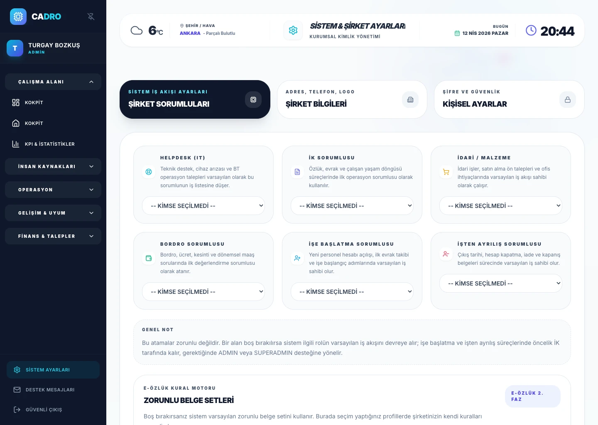

KVKK başvuru kaynağı
Çalışan verisi işleme süreçleri için KVKK’nın veri sorumlusu rehberini inceleyin. CADRO’nun belirli bir politikayı otomatik olarak KVKK uyumlu kıldığı iddia edilmez.

GÜVENLİK VE ERİŞİM YÖNETİMİ
Parola tercihleri, etkinlik geçmişi ve şirket ayarlarını mevcut ekranlar üzerinden inceleyin. Altyapı ve güvenlik kapsamını teknik dokümantasyonla değerlendirin.
Güvenlik dokümanı talep et
Bu ekranlar parola tercihleri ve etkinlik geçmişini gösterir; şifreleme algoritması, sertifika, sunucu lokasyonu veya ikinci faktör doğrulama kanıtı değildir.
Çalışan verisi işleme süreçleri için KVKK’nın veri sorumlusu rehberini inceleyin. CADRO’nun belirli bir politikayı otomatik olarak KVKK uyumlu kıldığı iddia edilmez.
ISO’nun resmî tanıtım sayfası, güvenlik yönetim sistemi değerlendirme çerçevesi sunar. Bu referans CADRO’nun sertifikası veya altyapı testlerini belgelemez.
MEVCUT EKRANLAR
Parola yenileme ve güvenlik tercihleri kullanıcı ekranında görünür. Ek doğrulama seçenekleri için ürün kapsamı ayrıca doğrulanır.
Hesap aktiviteleri geçmişte görüntülenir. Saklama süresi ve dışa aktarma yetkisi için teknik belgeler incelenmelidir.
Yönetim ekranları şirket bilgileri ve erişim yapılandırmasını gösterir. Rol izinleri kendi ortamınızda test edilmelidir.
YÖNETİCİ KONTROLLERİ
Şirket, ağ ve erişim seçeneklerini görünür kılan ekranlar, yapılandırma gereksinimlerini anlamanıza yardımcı olur. Bunlar güvenlik sertifikası veya uyumluluk garantisi değildir.
Uyumluluk yapılandırmasını inceleyin →
Kullanıcı güvenlik ekranında parola tercihleri ve etkinlik geçmişi bulunur. Mevcut ek koruma seçeneklerini hesabınızda veya demo sırasında doğrulayın.
Hayır. Arayüz kayıtları operasyonel görünürlük sağlar; uyumluluk için amaç, erişim, saklama ve silme politikalarınızla birlikte değerlendirilmelidir.
info@cadro.io adresinden güncel teknik dokümantasyon ve kapsam bilgilerini talep edin. Sayfadaki diyagram veya standart referansları tek başına yeterli kanıt değildir.